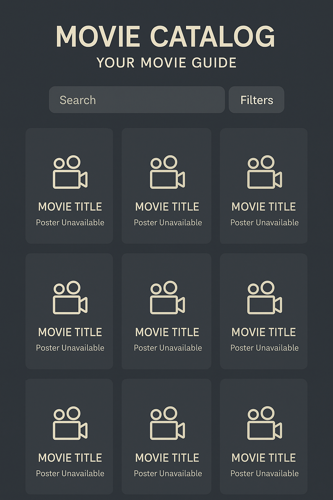

Site Name: MovieCatalog – Your Movie Guide
Description: The name "MovieCatalog" is direct and clearly states the website's purpose. The tagline "Your Movie Guide" reinforces the goal of providing a simple, personal resource for users to explore films. It's a straightforward and professional name that is easy to remember.
Optional Domain Availability: movie-catalog.com
Site Purpose
The MovieCatalog website will be a comprehensive, yet user-friendly, resource for discovering movies. Its purpose is to provide a clean and responsive interface where users can browse a wide range of film titles. The site will display essential information for each movie, including a synopsis, genre, director, release year, and rating, making it a valuable tool for anyone from casual viewers to dedicated cinephiles.
Scenarios
- Scenario 1: A student searching for a horror movie from the 1980s can filter the catalog by decade and genre to quickly find relevant titles.
- Scenario 2: A user who saw a movie poster can search the catalog by title to access detailed information such as director, synopsis, and rating.
- Scenario 3: A film enthusiast wants to view the highest-rated recent movies. The site allows sorting by rating and filtering by release year.
Color Schema
The color scheme uses a dark, elegant base to evoke a cinematic feel, complemented by a bright accent color for key interactive elements.
- Primary Color:
#1C2833(Dark Slate) – Background, headers, and footers. - Secondary Color:
#E74C3C(Bright Red) – Accent for buttons and hover states. - Text Color:
#FDFEFE(Off-White) – Main body and headings text. - Accent Color:
#6C7A89(Light Gray) – Used for borders and secondary text.
Typography
- Headings: Playfair Display – Elegant serif font for titles and headings.
- Body Text: Roboto – Clean sans-serif for content readability.
Wireframe
Mobile View
The mobile layout features a single-column grid of movie cards. Each card includes the poster, title, and rating. A search bar and filter icon are fixed at the top for quick access.
Desktop View
The desktop layout displays a multi-column grid of movie cards with poster, title, year, and rating. A sidebar contains search and filter tools for a broader browsing experience.